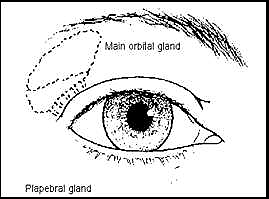
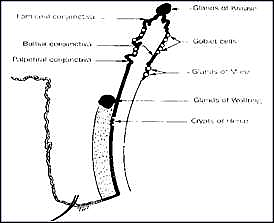

Main orbital & palpebral lacrimal glands

Accessory lacrimal glands of the conjunctiva
The tears
- A watery isotonic fluid.
- pH 7.4 (slightly alkaline).
- Formed mainly from NaCl and contains lysozyme.
N.B. Lysozyme is the antibacterial component of the aqueous layer.